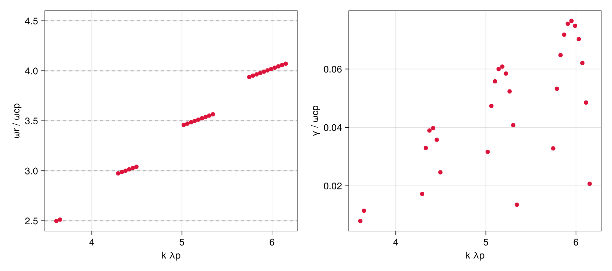
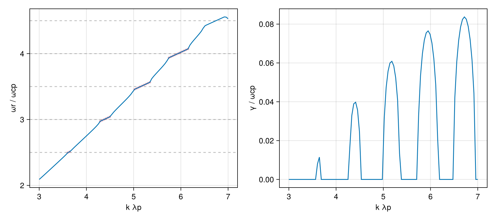

Ion cyclotron emission — alpha ring-beam (Warwick et al. 2018)
Quasi-perpendicular ion-cyclotron emission (ICE) driven by a fusion-born alpha ring-beam. A fast magnetosonic/Bernstein branch propagating at θ = 89.5° crosses successive deuteron cyclotron harmonics; each crossing that overlaps the alpha ring resonance goes unstable. The plasma is deuterons + electrons (Maxwellian) plus a hot alpha ring-beam with perpendicular ring speed v_dr = 0.045c.
Reference: Warwick (Fig. 3.8, 2018), Xie (Fig. 3, 2025), Guo (2026, arXiv:2606.14439)
using VlasovMaxwellDispersion
using VlasovMaxwellDispersion: isgrowing
using Unitful
using CairoMakiePlasma setup
Deuterons + electrons (Maxwellian) plus the hot alpha ring-beam. ref = Proton() normalizes to ωcp = eB₀/mp though no protons are present, fixing the paper's Ω_cp axis. Alpha and deuteron share q/m = e/(2mp), so Ω_α = Ω_D = ½ωcp and the ICE harmonics sit at half-integer multiples of ωcp (ωr ≈ 2.5, 3.0, 3.5 = deuteron harmonics 5, 6, 7). The alpha ring is a literal shifted-Gaussian ∝ exp[−v∥²/c∥² − (v⊥−v_dr)²/c⊥²], c∥ = c⊥ = √(2qT/m) from T, vr in c.
plasma = Plasma(
Species(Particle(z=2, A=4), GaussianRing(vr=0.045); n=1.0e16u"m^-3", T=1000u"eV"),
Species(Particle(z=1, A=2); n=9.98e18u"m^-3", T=1000u"eV"),
Species(Electron(); n=1.0e19u"m^-3", T=1000u"eV"),
B0=2.1u"T", ref=Proton(),
)Plasma{Tuple{Species{Particle{Float64, Float64}, Float64, VDFSpec{typeof(GaussianRing), @NamedTuple{vr::Float64}}, @NamedTuple{T::Unitful.Quantity{Int64, 𝐋^2 𝐌 𝐓^-2, Unitful.FreeUnits{(eV,), 𝐋^2 𝐌 𝐓^-2, nothing}}}}, Species{Particle{Float64, Float64}, Float64, Nothing, @NamedTuple{T::Unitful.Quantity{Int64, 𝐋^2 𝐌 𝐓^-2, Unitful.FreeUnits{(eV,), 𝐋^2 𝐌 𝐓^-2, nothing}}}}, Species{Particle{Float64, Float64}, Float64, Nothing, @NamedTuple{T::Unitful.Quantity{Int64, 𝐋^2 𝐌 𝐓^-2, Unitful.FreeUnits{(eV,), 𝐋^2 𝐌 𝐓^-2, nothing}}}}}, Float64, Particle{Float64, Float64}}((Species{Particle{Float64, Float64}, Float64, VDFSpec{typeof(GaussianRing), @NamedTuple{vr::Float64}}, @NamedTuple{T::Unitful.Quantity{Int64, 𝐋^2 𝐌 𝐓^-2, Unitful.FreeUnits{(eV,), 𝐋^2 𝐌 𝐓^-2, nothing}}}}(Particle{Float64, Float64}(3.204353268e-19, 6.69048769476e-27), 1.0e16, VDFSpec{typeof(GaussianRing), @NamedTuple{vr::Float64}}(VlasovMaxwellDispersion.GaussianRing, (vr = 0.045,)), (T = 1000 eV,)), Species{Particle{Float64, Float64}, Float64, Nothing, @NamedTuple{T::Unitful.Quantity{Int64, 𝐋^2 𝐌 𝐓^-2, Unitful.FreeUnits{(eV,), 𝐋^2 𝐌 𝐓^-2, nothing}}}}(Particle{Float64, Float64}(1.602176634e-19, 3.34524384738e-27), 9.98e18, nothing, (T = 1000 eV,)), Species{Particle{Float64, Float64}, Float64, Nothing, @NamedTuple{T::Unitful.Quantity{Int64, 𝐋^2 𝐌 𝐓^-2, Unitful.FreeUnits{(eV,), 𝐋^2 𝐌 𝐓^-2, nothing}}}}(Particle{Float64, Float64}(-1.602176634e-19, 9.1093837015e-31), 1.0e19, nothing, (T = 1000 eV,))), 2.1, Particle{Float64, Float64}(1.602176634e-19, 1.67262192369e-27))Growing modes from the seedless survey
k is swept over k·λp ∈ [3, 7], λp = c/ωpp the proton inertial length at n = 10¹⁹ m⁻³. No proton population exists, so inertial_length builds that length from the particle and density directly.
λp = inertial_length(plasma, Proton(), 1.0e19u"m^-3")
kλp = range(3.0, 7.0, length=100)
θ = deg2rad(89.5)
region = (1.8 - 0.8im, 4.2 + 0.2im)
geom = AngleSweep(k=collect(kλp) ./ λp, theta=θ)
sol = solve(DispersionProblem(plasma, region, geom))SurveySolution(retcode=Saturated, 142 roots, 108303 evals, 1.06 s)The instability lives entirely on the propagating branch, filtered by γ above a small cutoff that rejects the marginal roots sitting on the flat bands.
grow = [(kλp[i], ω) for b in sol for (i, ω) in enumerate(b.omega) if isfinite(ω) && imag(ω) > 1e-3]
harmonics!(ax) = hlines!(ax, [2.5, 3.0, 3.5, 4.0, 4.5]; color=(:gray, 0.5), linestyle=:dash)
fig = Figure(size=(900, 400))
axr = Axis(fig[1, 1]; xlabel="k λp", ylabel="ωr / ωcp")
axi = Axis(fig[1, 2]; xlabel="k λp", ylabel="γ / ωcp")
harmonics!(axr)
scatter!(axr, first.(grow), real.(last.(grow)); color=:crimson)
scatter!(axi, first.(grow), imag.(last.(grow)); color=:crimson)
fig
Clean propagating branch via seeded continuation
kseed = 5.2 / λp
seed = Seed(3.5 + 0.03im, Wavenumber(kseed .* sincos(θ)...))
solc = solve(DispersionProblem(plasma, seed, geom))
fig2 = Figure(size=(900, 400))
axr2 = Axis(fig2[1, 1]; xlabel="k λp", ylabel="ωr / ωcp")
axi2 = Axis(fig2[1, 2]; xlabel="k λp", ylabel="γ / ωcp")
harmonics!(axr2)
scatter!(axr2, first.(grow), real.(last.(grow)); color=(:crimson, 0.35), markersize=6) # survey for comparison
lines!(axr2, kλp, real.(solc.omega))
lines!(axi2, kλp, imag.(solc.omega))
fig2
This page was generated using Literate.jl.